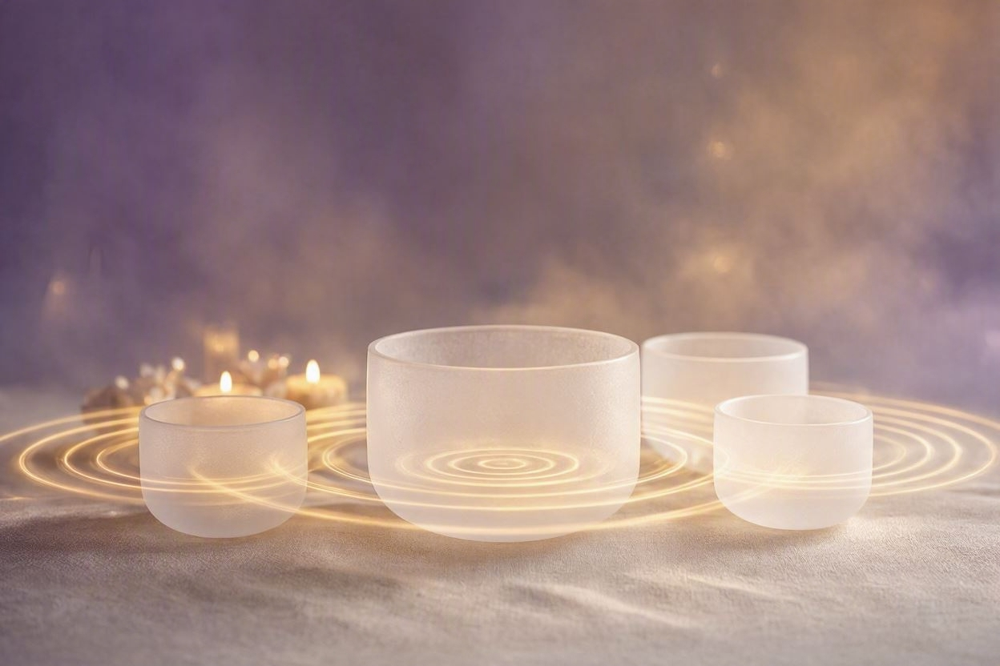
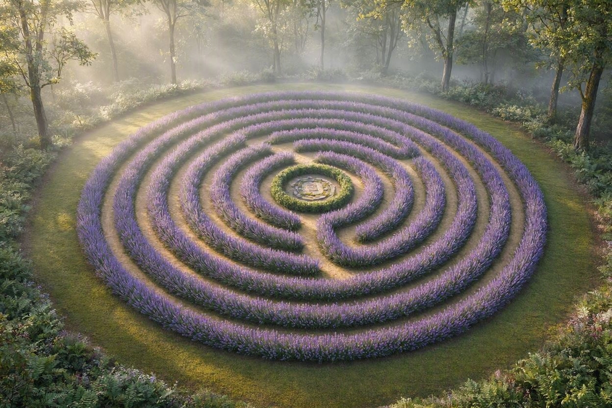
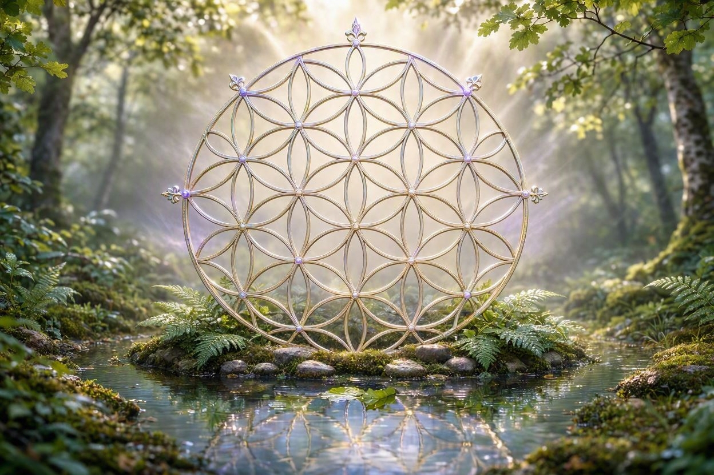

Each session is lovingly tailored to your unique needs
Healing Touch is a gentle, heart-centered energy therapy that uses light touch to support and facilitate physical, emotional, mental, and spiritual health. As a Healing Touch Certified Practitioner (HTCP), Brenda works with your body's energy field to clear blockages and restore natural flow.
This evidence-informed practice is used in hospitals, clinics, and private settings worldwide. Sessions are deeply relaxing and may help with stress reduction, pain management, anxiety, and recovery from illness or surgery.
Contact for pricing
Book This Service
Sound Healing uses vibrational frequencies — including singing bowls, tuning forks, chimes, and voice — to restore harmony and balance within the body. Sound has been used for thousands of years across cultures as a powerful healing tool.
During a session, you will be bathed in healing sounds that help shift brainwave states, release tension, and promote deep cellular healing. Many clients report feeling profoundly peaceful and renewed after just one session.
Contact for pricing
Book This ServiceCrystal Healing works with the natural vibrational energy of crystals and gemstones to support healing and balance. Each crystal carries unique properties that can help clear, activate, and harmonize the body's energy centers (chakras).
Brenda carefully selects and places crystals on and around the body to amplify healing intentions, release stagnant energy, and restore energetic flow. Sessions are gentle, deeply relaxing, and often profoundly transformative.
Contact for pricing
Book This Service
Walking the Labyrinth is an ancient meditative practice used across cultures for centuries as a tool for prayer, reflection, and healing. Unlike a maze, a labyrinth has one path that winds gently to the center and back out — a metaphor for life's journey.
Brenda guides you through this sacred walking meditation, helping you set intentions, quiet the mind, and open to deeper wisdom. The labyrinth walk can be a powerful tool for decision-making, grief processing, stress relief, and spiritual connection.
Contact for pricing
Book This Service
Sacred Geometry explores the universal patterns and shapes found throughout nature, art, architecture, and the cosmos. These geometric forms — including the Flower of Life, Metatron's Cube, and the Golden Ratio — are believed to carry profound healing and spiritual significance.
In sessions with Brenda, you will learn to work with sacred geometric patterns to align your energy, deepen meditation, and connect with universal healing frequencies. This practice bridges science, spirituality, and art in a beautifully holistic way.
Contact for pricing
Book This Service